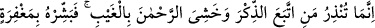
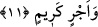
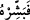

Kâfirlere göre uyarının varlığının yokluğu gibi olduğu beyan edilince bunun ardından
bu uyarıdan kimin etkileneceği beyan edildi ve şöyle buyruldu:
11. Sen ancak zikre (Kur’an’a) uyan ve görmeden Rahmân’dan korkan kimseyi
uyarabilirsin. İşte böylesini, bir mağfiret ve güzel bir mükâfatla müjdele.
“Sen ancak” düşünmek yahut öğüt almak sûretiyle “zikre (Kur’an’a) uyan” şeytanın
adımlarına uymakta ısrar etmeyen “ve görmeden Rahmân’dan korkan” yâni cezâsını
görmediği halde veya gelip çatmadan önce cezâ kendisinden gâib olduğu halde ya da
insanların gözünden ırak tek başına olduğu halde Allah Teâlâ’nın cezâlandırmasından
korkan ve sadece Allah’ın rahmetine güvenip aldanmayan “kimseyi uyarabilirsin.”
Yani senin uyarın ancak ona fayda verir.
Çünkü Allah Rahîm ve Gaffâr (çok merhametli ve bağışlayıcı) olduğu gibi Müntakim
ve Kahhâr (İntikam alan ve kahreden)’dır. Allah Teâlâ: “Rablerinin azabı(na karşı)
emin olunamaz.” (el-Meâric, 70/28) buyurduktan sonra onun gazabından ve azabından
nasıl emin olunur ki? Rahmetinden dolayı nimeti çok olan zâtın, peşpeşe gelen
nimetlerini kendisinden kesileceği endişesiyle ondan daha fazla korkulur. Böylece korku
ile beraber kahrı ifâde eden şeylerin zikredilmesi âşikâr olduğu halde korku ile birlikte
Rahmân isminin zikredilmesinin sebebi ortaya çıkmış oldu.
et-Te’vîlâtü’n-Necmiyye’de der ki: “...görmeden Rahmân’dan korkan” yani gaybî
bir nur ile küfür ve isyanın sonunun vahameti müşâhede edilir. O zaman hakkın
şâhidleriyle îmanın tadının kemâli ve irfan rütbesinin yüksekliği gerçekleşir.”
“İşte böylesini,” Kur’an’a uyan ve Rahman’dan korkanı, günahları için büyük “bir
mağfiret ve” sâlih amelleri için “güzel bir mükâfatla” değeri takdir edilemeyecek olan
cennet ve orada Allah Teâlâ’nın zikrine uyma ve Rahmân’dan korkma özelliklerini
kendinde toplayan kulları için cennette hazırladığı nimetlerle “müjdele.”
“
”deki “fâ” müjdeyi sıraya koymak veya ondan önce geçen zikre (Kur’ân’a) uyma
ve Rahman’dan korkma emrinin üzerine müjdeyi emretmek içindir.
Fakir (Bursevî) der ki: Allah Teâlâ burada müjdeyi iki şeye dayanan iki şeyin sonucu
kılmıştır. Kur’an hakkında düşünmek veya öğütten etkilenmek îmana götürür, îman da
mağfirete götürür. Çünkü Allah Teâlâ şirk dışında dilediği kullarının günahlarını
bağışlar (bk. en-Nisâ, 4/48). Haşyet (Allah korkusu) hasenâta/iyilikler, hasenât da güzel
mükâfâta götürür. Allah Teâlâ “Yaptıklarına karşılık olarak (verilir).” (es-
Secde,32/17) buyurmaktadır.
Bazıları der ki uyarı ancak zikir ehline te’sir eder. Çünkü onlar mezkûrun/zikredilenin